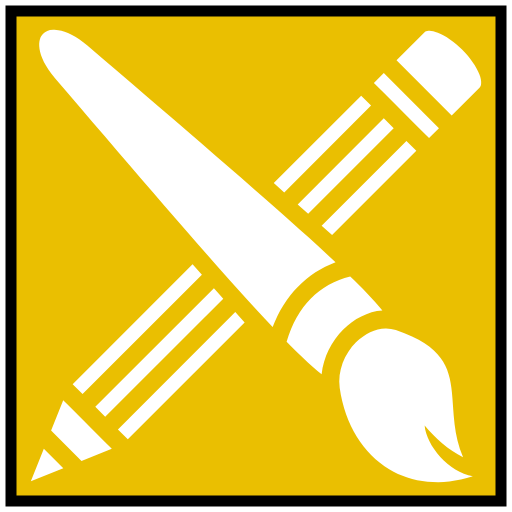

Mit navn er
Simon Christiansen
Til dagligt er jeg studerende som multimediedesigner på Københavns Erhvervs Akadami, ofte kaldt KEA. Jeg er 22 år og jeg er født i Esbjerg, hvoraf jeg har taget mig en HHX uddannelse. Jeg flyttede til København i 2016 hvor jeg påbegyndte en Bachelor på Copenhagen Business School, som ikke viste sig at være det rette valg for mig. Jeg har valgt multimediedesigner uddannelsen, da jeg syntes det er sjovt at udfolde ens kreative evner og lære indenfor mange foreskellige udbredte områder som sammen kan give et fælles produkt.
Interesserer

Videospil
Film
Animation
Teknologi
Rejse
Musik